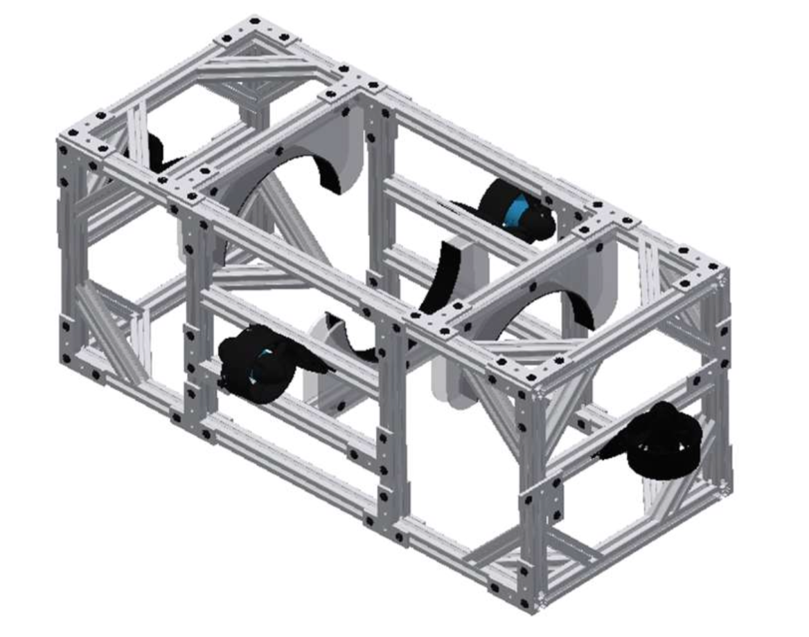

Exterior Design
The overall structure of the Ula consists of 4 parts: The hull, outer frame, outer electronics housing, and the thrusters. The outer frame is fabricated from 80/20 extruded 6061 aluminum for an adjustable, modular design. The tube is suspended using acrylic arches bordered with rubber that are attached to the frame and epoxied to the tube. The Ula utilizes four Blue Robotics T-200 brushless thrusters. Three degrees of freedom are provides with the placement of two forwards-facing and two upwards facing thrusters.
Final Frame Model

Acrylic Tube Holder
Electronics Hull
The hull is made from an 8” polycarbonate tube sealed by custom-made aluminum endcaps. One endcap is permanently sealed onto the tube by Loctite marine grade epoxy. The other end of the hull is sealed by a collar and a removable acrylic plate held in place by 10 bolts. The acrylic plate contains epoxied BlueRobotics cable penetrators to allow for the passage of cables in and out of the hull.
Electronic Frame and Trays Model
Interior Design
The inside of the hull is composed of circular frames, electronics racks, and the electrical components themselves. Four circular frames support two electronic racks. The upper rack consists of 0.25” and 0.50” holes while the lower rack consists of only 0.25” holes to allow for components to be zip-tied onto the tray. The upper rack features larger holes and a spatial gap to allow for wires to pass between the two racks.
Battery & Camera Housing
The battery housing is a miniature version of the main hull with only two cable penetrators. It too features one sealed endcap and a removable cap sealed by an O-ring. The batteries are annexed to the top of the frame by arches similar to those suspending the main hull. The camera housing was similar due to the visibility from the transparency of acrylic but shorter in length.
Battery Case Model
Pressure Sensing Housing:
The non-watertight parts of the sensor were epoxied into a PVC pipe.
Kill Switch Housing:
A 2 part, 3D printed resin housing was made for the kill switch. The first part covers 3 sides of the switch and features side extensions to allow for attachment to the sub. The last side is slides into place after the switch is placed inside. The kill switch connections was soldered and covered in heat shrink and they will be sealed into the housing by epoxy.